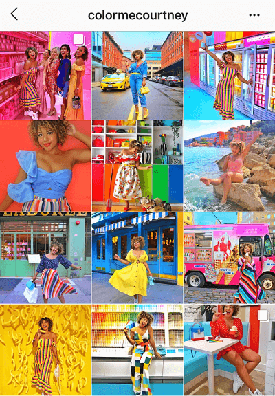

Na carreira de modelo, o Instragram é uma vitrime de trabalho, na qual o indivíduo expõem de forma organizada todos os seus trabalhos realizados. Por isso, a necessidade de manter um perfil com uma boa aparência visual e conteúdos pertinente para o ramo. Isso, transmitirá para as agências de modelos que são as irtermediárias de contratos com as empresas de publicidade e propagandas ou o mercado comercial de moda, a neutralidade do modelo em relação à assuntos polêmicos.


Postagens regulares visado analizar as estatística do perfil, é suma importâcia para o engajamento do conteúdo no Intagram. Um bom conteúdo, com fotos e os vídeos com uma boa qualidade, atraí significativamente o interresse dos usuários em visualizar, curtir, comentar, compartilhar ou salvar. Estes elementos, principalmente os comentários, compartilhamentos e salvamentos têm um peso mais relevante no engajamento do conteúdo, pois demanda mais esforço e tempo para o usuário interagir. Enquanto as curtidas, funcionam apenas como um sinal rápido de aprovação.Responder os comentários dos posts, tráz uma interação e aproximação entre você e os seguidores, assim gerando mais engajamento. Opte por responde-los com textos mais amplos, ao invés de emoji e se tiver a oportunidade de questioná-los sobre algo, questiona-os, isso provocara ainda mais engajamento.